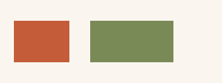

Penny 托管自检测试页
这是一张纯静态自检页，用于验证静态托管平台能否正常渲染中文、加载图片与样式、执行脚本、允许文件下载，以及是否存在平台中间页。页面不含 Penny 源码、不含真实账单、不含任何凭据。

自动检测结果
- HTTPS：检测中…
- CSS：检测中…
- JavaScript：检测中…
- 图片：检测中…
- 本机计数：检测中…
- 站点访问量（不蒜子）：检测中…
交互与下载检测
尚未点击
下载测试用模拟文件（PENNY-TEST-NOT-AN-APK.bin，约 1.1 MB）
注意：这不是 APK，不能安装，仅用于验证平台是否允许二进制文件下载。
站点访问统计（第三方）
本页接入 不蒜子 作为真实站点计数，用于验证「后台能否看到访问量」。它不含 Penny 账本、不读取用户输入，仅按域名累计页面访问次数。
脚本状态：加载中…